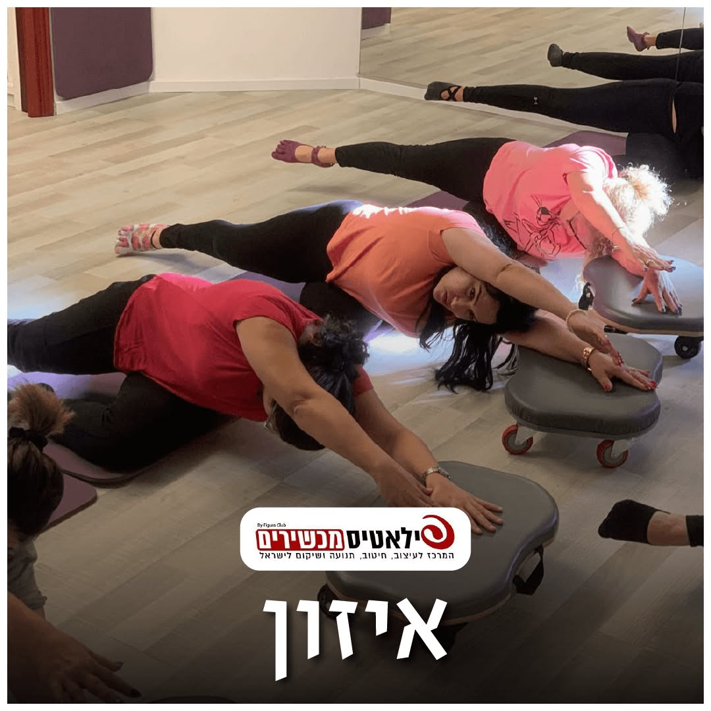

לקום מהרצפה: התנועה הקטנה שמספרת הרבה על הגוף שלך

את מתיישבת על השטיח לשחק עם הנכדה.
עשר דקות של צחוק.
ואז צריך לקום.
יד על הספה, ברך אחת, עוד ברך.
ומחשבה אחת בראש: "מתי זה נהיה ככה קשה?"
הקימה מהרצפה היא תנועה אחת קטנה.
והיא מספרת הרבה על הכוח, על הגמישות ועל שיווי המשקל שלך.
והחדשות הטובות: את כל אלה אפשר לחזק.
למה הקימה מהרצפה נהיית קשה
כדי לקום מהרצפה צריך כמה דברים ביחד:
רגליים חזקות שידחפו אותך למעלה.
ירכיים וקרסוליים גמישים, כדי להגיע לכריעה.
בטן וגב שמחזיקים את הגוף בזמן המעבר.
ושיווי משקל, ברגע שאת עוברת מברכיים לעמידה.
כשלא יורדים לרצפה שנים, הגוף שוכח את הדרך.
השרירים נחלשים, המפרקים מתקשחים,
ומה שהיה פעם טבעי נהיה מבצע.
מה המחקרים אומרים
- במחקר מברזיל (2012) בדקו כ-2,000 אנשים בגילאי 51 עד 80: כמה תמיכה הם צריכים כדי לשבת על הרצפה ולקום ממנה. מי שהצליחו בלי להיעזר בידיים ובברכיים היו בריאים יותר גם בשנים שאחר כך. זה קשר, לא גזירת גורל: הבדיקה משקפת כוח, גמישות ושיווי משקל, ואת כל אלה אפשר לשפר.
- אצל אנשים מבוגרים שנפלו, הרבה פעמים הבעיה הגדולה היא לא הנפילה עצמה, אלא שלא הצליחו לקום ממנה לבד. מחקרים מראים שאת הקימה מהרצפה אפשר ללמוד ולתרגל.
- סקירות של עשרות מחקרים מראות שאימון שמשלב חיזוק רגליים ותרגילי שיווי משקל מפחית נפילות אצל אנשים מעל 60.
בדיקה קטנה בבית
רק אם את מרגישה בטוחה, ועם כיסא יציב או ספה לידך.
שבי על הרצפה, וקומי.
שימי לב: כמה פעמים נעזרת ביד או בברך?
זה לא ציון. זו נקודת התחלה.
תבדקי שוב אחרי חודש של אימונים.
שלושה תרגילים שמכינים את הגוף לקימה
כל תרגיל - לאט, עם נשימה. אם כואב - עוצרים.
1. קימה מכיסא, בלי ידיים
יושבת בקצה כיסא יציב שצמוד לקיר.
ידיים משוכלות על החזה.
בנשיפה - קמה. בשאיפה - מתיישבת לאט, בשליטה.
8 פעמים. אם עוד קשה - נעזרת בידיים, וזה בסדר.
2. מהברכיים לעמידה, עם תמיכה
כורעת על שתי הברכיים, על מזרן או שמיכה מקופלת, מול כיסא יציב.
שתי ידיים על הכיסא.
מעלה רגל אחת קדימה, כף הרגל על הרצפה.
בנשיפה - דוחפת דרך הרגל הקדמית וקמה לעמידה.
חוזרת לאט לברכיים.
5 פעמים לכל רגל.
3. הליכה על ארבע
על הידיים והברכיים, גב ארוך.
מזיזה יד אחת קדימה, ואז את הברך הנגדית.
ארבעה צעדים קדימה, ארבעה אחורה.
זה מחזק כתפיים, בטן וירכיים, בדיוק מה שעובד בקימה.
מתי הולכים קודם לרופא
לפני שמתחילים להתאמן - אם יש לך אחד מאלה:
- סחרחורת כשאת קמה, או תחושה שאת עומדת להתעלף
- נפילה בחודשים האחרונים, במיוחד אם נפגעת
- כאב חד בברך או בירך כשאת כורעת
- אוסטאופורוזיס, או שבר בעבר
- ניתוח החלפת ברך או ירך - יש תנוחות שצריך אישור עליהן
זה לא אומר שאסור לך להתאמן.
זה אומר שמתחילים באישור, ובהתאמה.
מה עושים בסטודיו
בסטודיו אני מחזקת בדיוק את מה שעובד בקימה:
רגליים וירכיים על הרפורמר ועל כיסאות WONDA,
בטן וגב,
ותרגילי יציבות על פיתה ובוסו.
בעומס הדרגתי, בקבוצות קטנות, ואני רואה כל אחת.
אחרי הניתוח בגיל 45 הלכתי ברחוב כמו אישה זקנה.
היום אני מתאמנת על הטבעות בגיל 72.
הגוף לומד. בכל גיל.
אם החשש מנפילה מגביל אותך, השאירי פרטים ונחזור אלייך בהקדם 👇